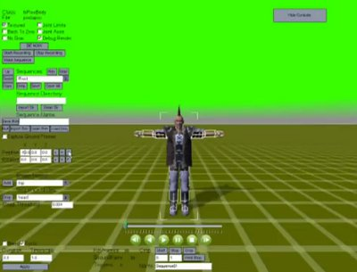

Please Join Our
|
 Our very first user interface... |
The program in your hands right now has come a long way from the first Early Adopter version we released in 2009. However, it still has enough rough edges and things that don't work perfectly that we're not willing to call this one "done" either. |